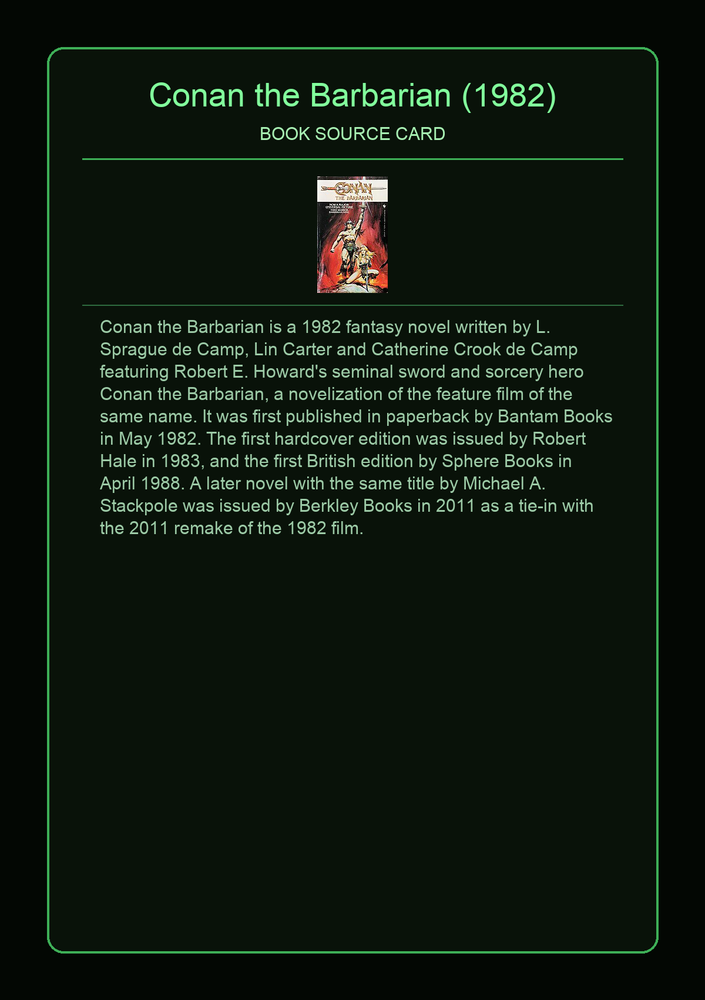
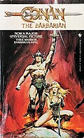

Conan the Barbarian is a 1982 fantasy novel written by L. Sprague de Camp, Lin Carter and Catherine Crook de Camp featuring Robert E. Howard's seminal sword and sorcery hero Conan the Barbarian, a novelization of the feature film of the same name. It was first published in paperback by Bantam Books in May 1982. The first hardcover edition was issued by Robert Hale in 1983, and the first British edition by Sphere Books in April 1988. A later novel with the same title by Michael A. Stackpole was issued by Berkley Books in 2011 as a tie-in with the 2011 remake of the 1982 film.
This page aggregates references to the source material behind Name Lore entries.